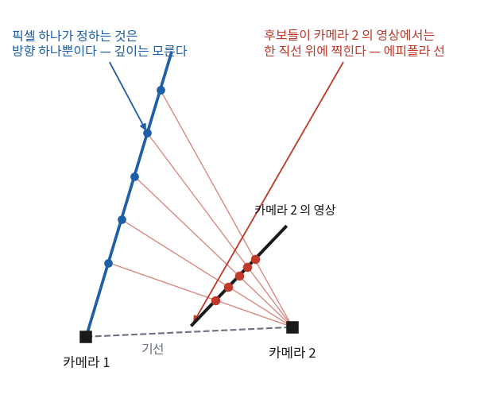
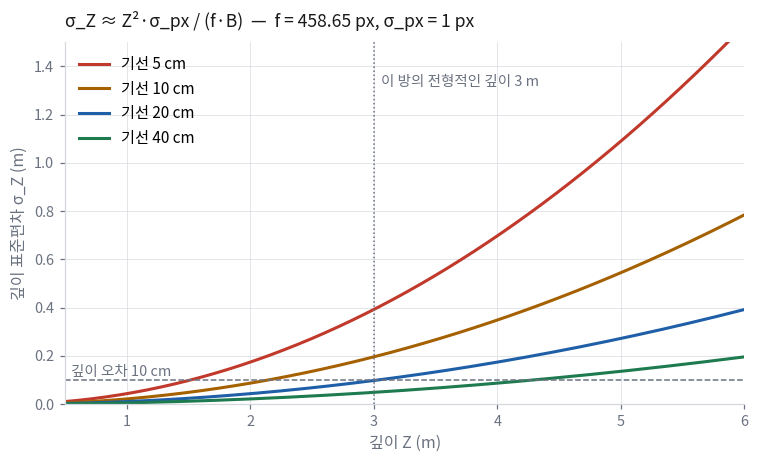
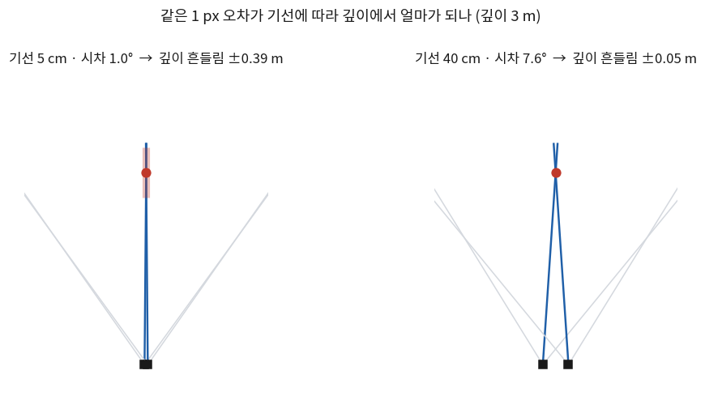

4회 마지막에 이렇게 적었다 — 픽셀 하나로는 3차원 점을 복원할 수 없다.
\(\mathbf{p}_C = Z K^{-1}\mathbf{u}\)에서 \(Z\)를 모르기 때문이다.
오늘은 영상을 한 장 더 가져온다. 그러면 무엇이 풀리고 무엇이 안 풀리는지가 오늘의 내용이다.
결론을 미리 말하면 거의 다 풀리고 하나가 안 풀린다.
그리고 그 하나가 이 강의에 IMU가 들어오는 이유다.
한 장 요약 — 영상 두 장으로 알 수 있는 것과 없는 것 학기 내내 본다
무엇
알 수 있나
왜
두 카메라의 상대 회전 \(R\)
안다
대응점 다섯 쌍이면 결정된다
두 카메라의 이동 방향 \(\mathbf{t}/\lVert\mathbf{t}\rVert\)
안다
같이 나온다
두 카메라 사이 거리 \(\lVert\mathbf{t}\rVert\)
모른다
③절. 영상만으로는 원리적으로 불가능하다
3차원 점의 모양 (점들의 상대 배치)
안다
④절 삼각측량
3차원 점까지의 실제 거리
모른다
위와 같은 이유. 모양은 맞고 배율만 모른다
모양이 얼마나 정확한가
계산할 수 있다
⑤절. 기선이 짧으면 크게 흔들린다
해석: 「모른다」가 두 줄인데 사실은 같은 하나다.
거리를 모르니 점까지의 거리도 모른다. 배율 하나가 통째로 빠져 있는 상태이고,
이것을 스케일 모호성이라고 한다. 그리고 마지막 줄이 오늘 시간을 가장 많이 쓰는 곳이다 —
모양조차 항상 잘 나오는 것은 아니다.
① 대응점 하나가 주는 제약
첫 영상의 픽셀 하나는 방향 하나를 정한다(4회 역투영).
그 방향 위 어디에 점이 있는지는 모른다. 그런데 두 번째 카메라의 위치를 안다면,
그 광선 위의 후보들이 두 번째 영상에서 어디에 찍힐지는 계산할 수 있다.

깊이 후보들이 두 번째 영상에서 한 직선 위에 찍힌다.
이 직선을 에피폴라 선이라고 한다. 대응점을 온 영상에서 찾을 필요가 없어진다는 뜻이고,
7회 매칭이 실제로 이 성질을 쓴다.
이 사실을 식 한 줄로 적은 것이 에피폴라 제약이다.
$$
\mathbf{x}_2^\top E\,\mathbf{x}_1 = 0, \qquad E = [\mathbf{t}]_\times R
$$
🆕 이 절에서 처음 나오는 이름
에피폴라 선 (epipolar line)
한 영상의 점 하나에 대응하는, 다른 영상에서의 직선.
여기서는 「대응점이 있을 수 있는 자리」를 한 줄로 줄이는 데 썼다.
에피폴 (epipole)
기선이 영상과 만나는 점. 모든 에피폴라 선이 여기서 만난다.
카메라가 정면으로 다가가면 에피폴이 영상 한가운데에 온다.
\(E\) — Essential 행렬 · \(F\) — Fundamental 행렬
\(E\)는 정규화 좌표에서의 제약(카메라 내부 파라미터를 이미 안다),
\(F\)는 픽셀 좌표에서의 제약이다. \(F = K^{-\top}EK^{-1}\)로 이어져 있다.
우리는 \(K\)를 알고 있으므로 \(E\)만 쓴다.
\(E\)는 3×3인데 자유도는 5다 — 회전 3, 이동 방향 2. 크기가 빠져 있다.
이 「5」가 오늘 전체의 핵심 숫자이고, 왜 크기가 빠지는지는 ③절에서 본다.
② \(E\)에서 자세를 꺼낸다 맡긴다
대응점이 충분히 있으면 \(E\)를 풀 수 있다. 자유도가 5이므로 다섯 쌍이면 된다(5점 알고리즘).
제약을 일부 무시하고 선형으로 푸는 8점 알고리즘도 있고, 구현이 훨씬 쉽다.
방법
필요한 대응점
특징
8점
8쌍
선형이라 간단하다. 대신 \(E\)의 제약을 안 걸어서 SVD로 다시 눌러 줘야 한다
5점
5쌍
제약을 다 쓴다. RANSAC 안에서 훨씬 유리하다 — 뽑을 점이 적을수록 성공 확률이 높다
실제 데이터에는 잘못 짝지어진 대응점이 섞여 있다. 그래서 RANSAC으로 감싼다 —
무작위로 최소 개수만 뽑아 풀어 보고, 그 답에 동의하는 점이 가장 많은 것을 고른다.
이 절의 계산은 OpenCV가 다 해 준다(findEssentialMat,
recoverPose). 여기는 🟢다.
🆕 이 절에서 처음 나오는 이름
RANSAC (RANdom SAmple Consensus)
「최소 개수만 무작위로 뽑아 풀고, 그 답에 동의하는 점을 센다」를 여러 번 반복해
가장 많이 동의받은 답을 고르는 방식.
여기서는 잘못 짝지어진 대응점을 걸러 내는 데 썼다.
뽑는 개수가 적을수록 「전부 맞는 점일 확률」이 높아지므로 5점이 8점보다 유리하다.
인라이어 (inlier) · 아웃라이어 (outlier)
답에 동의하는 점과 안 하는 점. 「동의한다」의 기준은 사람이 정하는 임계값이다 —
보통 에피폴라 선까지의 거리 몇 픽셀. 7회에서 이 비율을 계기판으로 계속 본다.
시차 (parallax)
한 점을 두 위치에서 볼 때 두 시선이 이루는 각도.⑤절 전체가 이 값에 관한 이야기이고, 삼각측량이 될지 안 될지를 이 값으로 판정한다.
⚠️ \(E\)에서 나오는 자세는 네 개다
\(E\)를 분해하면 \((R, \mathbf{t})\) 후보가 네 쌍 나온다. 회전 두 가지 × 이동 부호 두 가지다.
고르는 조건은 4회에 나온 \(Z > 0\)이다 — 삼각측량한 점이
두 카메라 모두의 앞에 있어야 한다.
나머지 셋은 점이 카메라 뒤에 생긴다.
recoverPose가 이 판정까지 해 주지만,
「앞에 있는 점의 개수」를 직접 세어 보는 것이 좋은 검사가 된다.
③ 스케일 모호성 — 이 강의의 분기점 사람이 한다
\(E = [\mathbf{t}]_\times R\)에서 \(\mathbf{t}\)를 두 배로 하면 \(E\)도 두 배가 된다.
그런데 제약식은 \(\mathbf{x}_2^\top E \mathbf{x}_1 = 0\)이다. 오른쪽이 0이다.
양변에 2를 곱해도 식은 그대로 성립한다.
그래서 \(E\)는 \(\mathbf{t}\)의 방향만 준다. 크기는 못 준다.
수식이 그렇게 생겼다는 것이 전부이고, 더 나은 알고리즘으로 해결될 성질의 것이 아니다.
왜 원리적으로 불가능한가 — 생각 실험 하나
방을 두 배로 키우고 카메라도 두 배로 멀리 움직였다고 하자.
모든 점의 3차원 좌표가 두 배가 되고 카메라 위치도 두 배가 된다.
그러면 \(X/Z\)는 그대로다. 찍히는 영상이 완전히 같다.
영상이 같으면 어떤 알고리즘도 둘을 구별할 수 없다.
정보 자체가 영상에 없다.
해석: 1회에서 「카메라만 쓰면 크기를 모른다」고 했던 것의 증명이 이 절이다.
그리고 이것을 깨는 것이 IMU다.
가속도계는 m/s²라는 절대 단위로 잰다.
같은 영상이라도 「두 배 큰 방을 두 배 빠르게」 지나갔다면 가속도가 다르게 찍힌다.
12회 초기화가 하는 일이 정확히 이것이다 — 영상이 준 모양에 IMU가 준 자를 대는 것.
당장은 배율을 하나 정해 두고 간다. 보통 \(\lVert\mathbf{t}\rVert = 1\)로 놓는다.
그러면 지도의 단위가 「첫 두 프레임 사이 거리」가 된다. 미터가 아니다.
이 사실을 잊고 미터인 것처럼 평가하면 ATE가 이유 없이 크게 나온다.
④ 삼각측량 — 두 직선의 교점을 찾는다
자세를 알았으면 이제 점의 위치를 구한다.
각 영상의 픽셀은 3차원 방향이 되고, 카메라 원점에서 그 방향으로 나가는 직선이 된다.
\(t_1, t_2\)를 구해 두 점을 각각 계산하고 가운데를 답으로 삼는다. 중점법이다.
이름은 거창해도 하는 일은 2×2 연립방정식 하나다.
⚠️ \(\mathbf{v}_1\)과 \(\mathbf{v}_2\)가 평행하면 풀 수 없다
\(V^\top V\)가 특이해진다. 두 광선이 평행하다는 것은 두 카메라가 같은 자리에서 봤다는 뜻이고,
실제로 그런 경우가 자주 생긴다 — 제자리에서 회전만 했을 때다.
기선이 0이면 삼각측량은 원리적으로 불가능하다.
inverse()가 에러를 내지 않고 거대한 숫자를 돌려주는 것이 이 자리의 위험이다.
조건수를 재서 미리 걸러야 한다.
⑤ 시차 — 언제 잘 되고 언제 안 되나 사람이 한다
④절이 풀린다고 해서 답이 정확한 것은 아니다. 얼마나 흔들리는지는 따로 계산해야 한다.
픽셀 잡음 \(\sigma_{px}\)가 깊이 오차로 얼마나 번지는지는 이 식으로 어림된다.
\(f = 458.65\) px(4회), \(\sigma_{px} = 1\) px로 두고 실제 숫자를 넣어 보면 이렇다.
vision-slam/src/camera_numbers.py가 계산한 값이다.
깊이 \(Z\)
기선 5 cm
10 cm
20 cm
40 cm
2 m
0.17 m
0.09 m
0.04 m
0.02 m
3 m
0.39 m
0.20 m
0.10 m
0.05 m
5 m
1.09 m
0.55 m
0.27 m
0.14 m

깊이의 제곱으로 커지고, 기선에 반비례한다.
기선을 두 배로 늘리는 것과 깊이가 \(\sqrt2\)배 가까워지는 것이 같은 효과다.
이제 이 방의 숫자를 넣어 본다. V1_01_easy의 평균 속도는 0.41 m/s이고
영상은 초당 20장이다. 연속한 두 프레임 사이 기선은 약 2 cm다.

같은 1 px 오차가 기선에 따라 깊이에서 얼마가 되는지.
왼쪽에서는 두 광선이 거의 평행해서 어디서 만나는지가 흐릿하다.
기선
시차 각도 (깊이 3 m)
\(\sigma_Z\)
그때까지 걸리는 시간
2 cm (연속 두 프레임)
0.38°
0.98 m
0.05초
5 cm
0.95°
0.39 m
0.12초
10 cm
1.91°
0.20 m
0.24초
20 cm
3.82°
0.10 m
0.49초 = 영상 10장
40 cm
7.63°
0.05 m
0.98초
해석: 첫 줄이 오늘의 결론이다.
연속한 두 프레임으로 삼각측량하면 깊이 3 m에서 오차가 1 m에 가깝다.
방이 5.8 m니까 방 크기의 6분의 1이 한 점의 오차로 들어온다는 뜻이다.
「매 프레임 삼각측량」은 게으른 구현이 아니라 원리적으로 틀린 구현이다.
그러면 어떻게 하나. 시차가 쌓일 때까지 기다렸다가 만든다.
영상 열 장쯤 지나 기선이 20 cm가 되면 오차가 10 cm로 떨어진다.
이것이 키프레임이 필요한 이유이고, 14회의 키프레임 정책이 여기서 시작된다.
⛔ 제자리 회전에서 새 점을 만드는 것
기선이 0이면 시차도 0이고 삼각측량은 불가능하다. 정확도가 나쁜 게 아니라 아예 안 된다.
그런데 코드는 답을 하나 뱉는다 — 아주 먼 곳에 있는 점을.
V1_01_easy의 최대 각속도가 0.94 rad/s(54 °/s)다. 제자리 회전 구간이 실제로 있다.
시차를 재서 임계값 아래면 새 점을 만들지 않는 것이 옳은 처리다.
임계값을 얼마로 둘지는 위 표를 보고 사람이 정한다.
🤖 의뢰서 — 두 시점 재구성 맡기되 검사한다
\(E\)를 풀고 자세를 꺼내고 삼각측량하는 코드는 대부분 OpenCV 호출이다.
그래서 의뢰서를 싣는다. 다만 [검증] 칸에 사다리 3단을 처음으로 넣는다.
[인터페이스] 아래 두 함수를 만들어 줘.
① Sophus::SE3d recoverPose(const vector<Vector2d>& uv1, const vector<Vector2d>& uv2, vector<bool>& inlier)
② optional<Vector3d> triangulate(const SE3d& T_WC1, const SE3d& T_WC2, const Vector2d& uv1, const Vector2d& uv2)
②는 시차가 임계값 아래면 nullopt을 돌려줘 — 값을 지어내지 말아 줘.
[참조] OpenCV findEssentialMat + recoverPose를 쓰되,
삼각측량은 중점법으로 직접 짜 줘. 조건수를 보고 판정해야 하기 때문이다.
[검증] 아래 시험을 같이 써 줘. 기준을 넘으면 실패로 출력한다.
① 무잡음 합성 데이터로 — 3차원 점 100개와 카메라 두 대를 직접 만들고,
정확한 픽셀 좌표를 계산해 넣는다. 재구성 오차 < 1e-8
② 같은 데이터에서 회전 오차 < 1e-8 rad, 이동 방향 오차 < 1e-8 rad
(크기는 비교하지 말아 줘 — 원리적으로 모른다)
③ 두 카메라를 같은 위치에 두고 회전만 시켰을 때 triangulate가
전부 nullopt을 돌려주는가
④ 픽셀에 σ = 1 px 잡음을 넣었을 때 깊이 3 m·기선 20 cm에서
오차가 0.10 m 근처인가 (표와 대조) 실패하면 어느 점에서 얼마나 벌어졌는지 함께 찍어 줘.
[함정]findEssentialMat은 정규화 좌표를 받는다 —
왜곡을 먼저 풀어야 한다(4회). \(E\)에서 나오는 자세 후보는 네 개이고
\(Z > 0\)으로 고른다. recoverPose가 돌려주는 것이
T_C1C2인지 T_C2C1인지 문서에서 확인하고 주석에 적어 줘.
[남긴다] 시차 임계값을 얼마로 정했고 왜 그 값인지 코드 위에 적어 줘.
받은 코드에서 확인할 것
□ 시험 ①이 정말 무잡음인가 — 합성 픽셀에 반올림이 섞이지 않았는가
□ 이동 크기를 비교하는 시험이 있는가 ← 있으면 잘못된 시험이다
□ 시차 임계값이 어디서 왔는지 적혀 있는가
□ recoverPose 의 방향(T_C1C2 인가)이 주석에 적혀 있는가
□ 시험 ③이 nullopt 를 실제로 확인하는가, 값이 크다는 것만 보는가
그리고 결과가 이상할 때.
무잡음 합성 데이터에서 재구성 오차가 0.34로 나온다. 잡음은 넣지 않았다.
회전 오차는 1e-9로 통과하고, 이동 방향 오차도 통과한다.
삼각측량한 점들의 모양은 맞는데 전체가 한 배율로 커져 있다. 원인 후보를 세 개 대고, 각각을 확인할 가장 작은 실험을 하나씩 제안해 줘.
코드는 아직 고치지 말아 줘.
해석: 이 증상은 오늘 배운 것 안에 답이 있다.
「모양은 맞는데 배율만 다르다」는 버그가 아닐 수 있다.
\(\lVert\mathbf{t}\rVert = 1\)로 정규화된 답과 정답을 그냥 비교하면 이렇게 나온다.
시험이 틀린 것이다. 이런 경우를 한 번 겪어 두는 것이 오늘의 목적 중 하나다 —
코드가 아니라 판정 기준을 의심해야 하는 때가 있다.
🧪 오늘 만든 것이 맞는지 어떻게 아나 — 사다리 3단 사람이 한다
오늘 검증 사다리 3단(무잡음 합성 데이터)을 처음 쓴다.
그리고 이 단이 학기 내내 가장 많이 쓰이는 단이 된다.
방법은 단순하다. 정답을 아는 데이터를 직접 만든다.
3차원 점을 원하는 대로 뿌리고, 카메라 두 대를 원하는 자세로 놓고,
4회의 투영 함수로 정확한 픽셀 좌표를 계산한다. 잡음은 0이다.
[할 일] 무잡음 합성 데이터 생성기를 만들어 줘.
3차원 점 N개를 상자 표면에 뿌리고, 카메라 두 대를 주어진 자세로 놓고,
4회의 투영 함수를 그대로 써서 픽셀 좌표를 만든다.
[인터페이스] 잡음 표준편차와 기선 길이를 인자로 받게 해 줘.
sigma_px = 0이 기본값이어야 한다.
[검증] 생성기 자체를 시험하는 코드도 같이 써 줘.
① sigma_px = 0일 때, 만든 픽셀을 다시 역투영해 광선을 만들면
원래 3차원 점을 정확히 지나는가 — 점과 광선의 거리 < 1e-12
② 화면 밖으로 나가거나 Z <= 0인 점이 결과에 섞이지 않는가
③ 요청한 기선 길이가 실제로 그 값인가 — 1e-12
[함정] 픽셀 좌표를 정수로 반올림하지 말아 줘.
반올림하는 순간 「무잡음」이 아니게 되고, 3단 시험의 기준 1e-8을 절대 통과할 수 없다.
[남긴다] 점을 어떤 모양으로 뿌렸는지, 왜 그렇게 골랐는지 적어 줘.
받은 코드에서 확인할 것 — 생성기가 틀리면 모든 3단 시험이 무의미해진다.
□ 픽셀 좌표가 실수인가, 정수로 반올림됐는가
□ 투영에 4회에 만든 함수를 그대로 썼는가, 새로 짰는가 ← 새로 짰으면 두 벌이 된다
□ 잡음 기본값이 0 인가
□ 시험 ①이 1e-12 로 통과하는가
□ 점을 뿌린 모양이 한 평면에 몰려 있지 않은가 ← 평면이면 E 가 잘 안 풀린다
해석: 마지막 항목이 함정이다. 점을 벽 하나에만 뿌리면
장면이 평면이 되고, 그러면 \(E\)를 푸는 문제가 퇴화한다 —
답이 하나로 정해지지 않는다. 「합성 데이터에서만 이상하다」의 흔한 원인이고,
합성 데이터를 만드는 것도 설계라는 것을 보여 주는 자리다.
단
시험
통과 기준
여기서 걸리는 것
1
\(\mathbf{x}_2^\top E \mathbf{x}_1 = 0\)이 정답 대응점에서 성립하는가
< 1e-12
\(E\)의 정의, 좌표계 방향
3
무잡음 합성에서 재구성 오차
< 1e-8
좌표계 규약 위반, 왜곡 처리 누락
3
무잡음에서 회전·이동 방향 오차
< 1e-8 rad
\(T_{C_1C_2}\)와 \(T_{C_2C_1}\) 혼동
3
기선 0(제자리 회전)에서 삼각측량이 거부되는가
전부 nullopt
조건수 검사 누락
5
잡음 1 px에서 깊이 오차가 ⑤절 표와 맞는가
0.10 m 근처 (3 m·20 cm)
모델과 구현이 다르다
⛔ 3단에서 오차가 0이 아닐 때 계수를 만지는 것
잡음이 0인 데이터다. 정답이 있고, 그 정답이 정확히 나와야 한다.
오차가 1e-8보다 크면 튜닝할 문제가 아니라 버그다.
RANSAC 임계값이나 반복 횟수를 바꿔서 숫자가 좋아졌다면,
증상만 가려졌고 원인은 그대로 남아 있다.
실제 데이터로 넘어간 뒤에는 그 원인을 찾기가 훨씬 어려워진다.
🎨 이 회차의 그림 맡긴다
두 카메라의 시야뿔 + 각 점으로 가는 광선 + 두 광선이 이루는 시차 각도.
기선을 2 cm에서 40 cm까지 늘려 가며 광선이 만나는 지점의 흔들림을 같이 그린다.
⑤절의 그림이 그것이다.
이 그림으로 판정하는 것: ⑤절 표의 숫자와 그림의 흔들림 폭이 맞는가.
맞으면 「기선이 짧으면 깊이가 흔들린다」가 식과 그림 양쪽에서 확인된 것이다.
학기 중에 삼각측량이 이상할 때 제일 먼저 여는 그림이 된다.
✅ 오늘의 점검
조금 더 알아두면 시험 범위 아님
중점법 말고 DLT — 그리고 왜 둘 다 알아 둘 만한가
④절의 중점법은 3차원 공간에서 두 직선의 거리를 최소화한다.
직관적이고 코드가 짧다. 단점은 최소화하는 양이 우리가 실제로 재는 값이 아니라는 것이다 —
우리가 재는 것은 픽셀이지 3차원 거리가 아니다.
DLT(Direct Linear Transform)는 투영식 \(\mathbf{u} \times (P\mathbf{X}) = 0\)을 그대로 선형 연립방정식으로 만들고
SVD로 푼다. 역시 픽셀 오차를 직접 최소화하지는 않지만,
여러 시점을 한꺼번에 넣기 쉽다. 세 장, 네 장으로 늘려도 행이 늘어날 뿐이다.
둘 다 최적해는 아니다. 진짜로 픽셀 오차를 최소화하려면 비선형 최적화가 필요하고,
그게 9회의 번들조정이다. 여기서는 좋은 초기값을 만드는 것이 목적이므로 어느 쪽이든 된다.
초기값을 만드는 방법과 다듬는 방법이 다르다는 것이 이 강의에서 반복해서 나오는 구조다.
순수 회전에서는 \(E\) 대신 무엇을 쓰나 — homography
기선이 0이면 \(E\)를 풀 수 없다(④절). 그런데 이때도 두 영상 사이에는 관계가 있다 —
회전만으로 이어지는 관계다. 이것은 3×3 행렬 하나로 표현되고 homography라고 부른다.
장면이 평면일 때도 같은 형태가 나온다.
실제 SLAM 시스템은 둘을 같이 풀어 보고 더 잘 맞는 쪽을 고른다.
ORB-SLAM의 초기화가 그렇게 되어 있다 — \(E\)와 homography를 둘 다 풀고 점수를 비교한다.
「지금 상황이 삼각측량이 가능한 상황인가」를 시스템이 스스로 판단하게 만드는 것이고,
⑤절에서 시차 임계값으로 하는 일의 더 정교한 판이다.
이 강의에서는 homography를 구현하지 않는다. 대신 시차가 부족하면 새 점을 만들지 않는 쪽으로 처리한다.
IMU가 있으므로 그 구간의 자세는 IMU가 이어 준다 — 이것이 시각-관성 시스템의 값어치이기도 하다.
1부가 여기서 끝난다 — 무엇이 손에 남았나
다섯 회차 동안 만든 것을 세어 보면 이렇다.
회
손에 남은 것
어느 시험을 통과했나
1~2
데이터셋 로더, conventions.md
1단 항등식
3
회전 유틸과 수치 야코비안 대조 도구
2단
4
카메라 모델, 점군 오버레이
1·2·4단
5
두 시점 재구성, 무잡음 합성 데이터 생성
3단
굵게 표시한 둘이 도구다. 이 강의에서 만드는 것 중
다른 모든 모듈을 검사하는 데 쓰이는 것이고, 학기 끝까지 계속 부른다.
9회의 번들조정도, 11회의 필터도, 12회의 사전적분도 이 둘로 검사한다.
2부는 실제 영상에서 대응점을 뽑는 이야기로 시작한다.
그전에 6회에서 SLAM이라는 분야가 30년 동안 어떻게 여기까지 왔는지를 한 번 펼쳐 본다.
지금까지 만든 것들이 그 지도의 어디쯤에 있는지가 그때 보인다.